在北京吃一顿饭要花多少钱
偶然回顾近半年的博客内容，有点太严肃沉重。正好最近半年也吃了很多顿饭，才开始对吃饭这件事情有个大概的了解。
按照北京的消费水平，人均 180 人民币就可以吃一顿像样的中餐了。如果低于 ¥180，可能会略显寒酸，即使能够刚刚吃饱，也可能会让坐在对面的女生感觉不尽兴。比较好的状态是，吃饱后桌子上还剩小半盘子菜，坐一坐聊会儿天的功夫，还能再补两口。
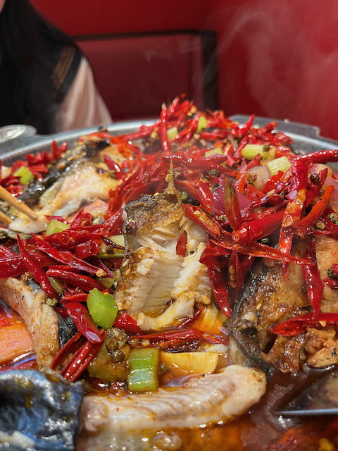这是前几天在望京凯德 MALL 吃的麻辣烤鱼，在一家叫南锣肥猫的店，很好吃。鱼软，刺少，微辣，辣度刚刚好。拍出来的照片颜色鲜艳。锅里加了一些配菜，有午餐肉、腐竹、油条之类，人均 ¥180。
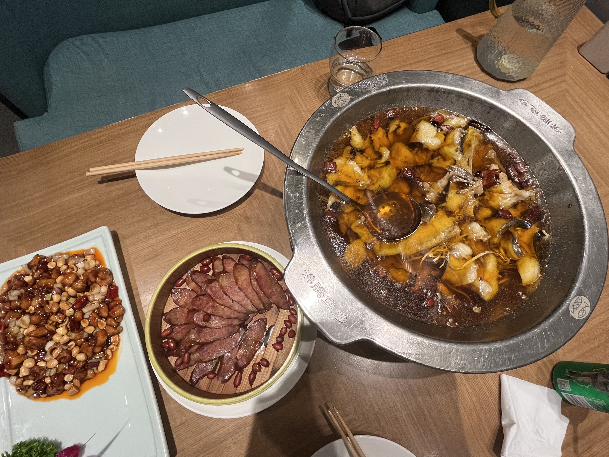这个是蓝色港湾的一家烤鱼的店，不知道这种在汤里泡着的算不算烤鱼，鱼其实不好吃，没有麻辣烤鱼好吃，不过没刺。中间的腊肠是我硬要点，结果全剩下了，也不是不好吃，实在吃不动了。这顿饭人均 ¥300，算是不便宜，不过很多没吃掉，浪费了。当时也没想着打个包。
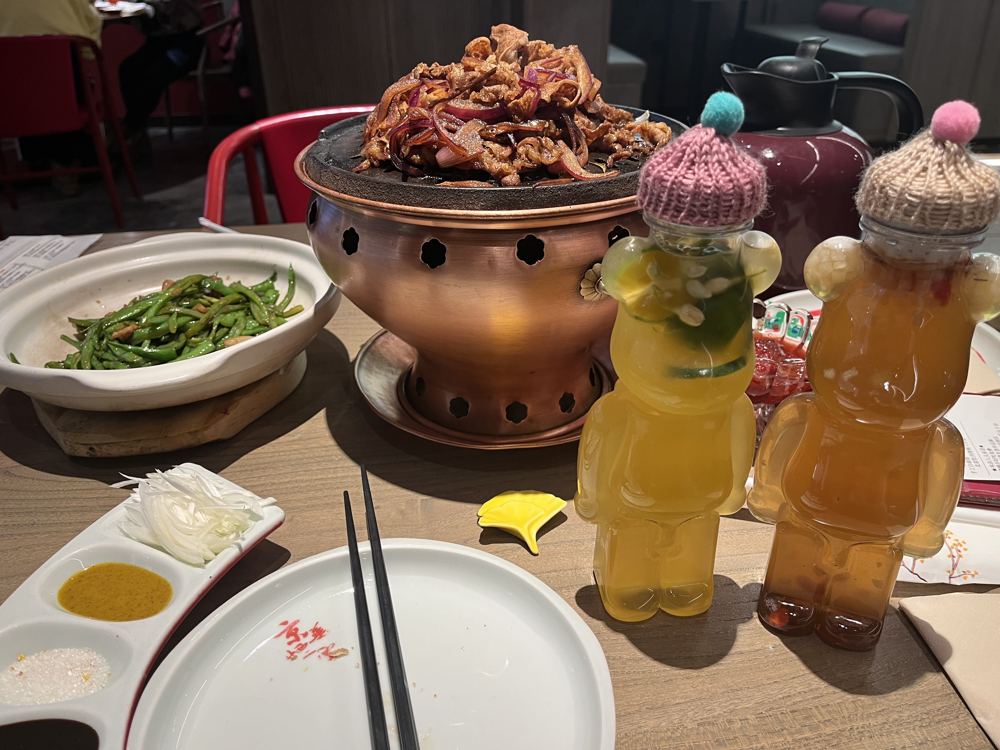北京的烤鸭是有名的地方菜，是很经典的一个菜的种类。这是在合生汇的京华烟云，场地稍微亲民简陋，是那种距离比较近的方形的桌子，价格在烤鸭店里算适中偏低，甜口的虾不太好吃，饮品杯子倒是非常可爱，当时是冬天，还给杯子戴个小帽子，可以带回家收藏了。人均 ¥140 就可以吃饱，多点两个菜尝一尝就要人均 ¥180。
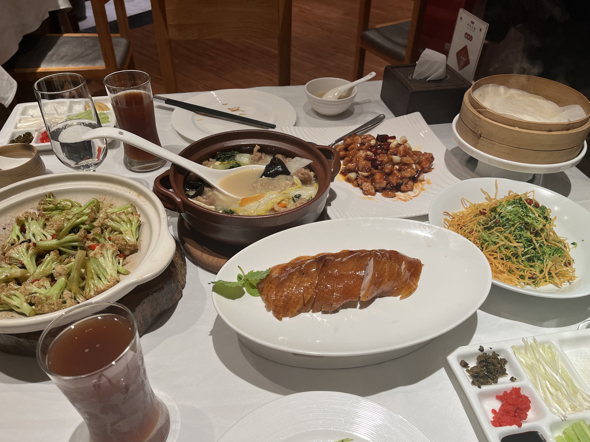这是在望京的四季民福烤鸭店，一家很火爆的连锁店，饭点去几乎要等位 40 多分钟。这家的烤鸭肯定好吃，不过我觉得最好吃的是那个肉汤，尤其是汤，特别好喝，菜刚端上来会觉得气味奇怪，有点排斥，但是喝两口就喜欢上了。还有那个凉菜，不知道是什么拌什么，又细又凉，口感非常好。对烤鸭的印象不深，只记得菜很多根本吃不完，人均不到 ¥200。
小大董也是一家有名的连锁店，很多商圈都有分店。三里屯太古里三层有小大董，红烧肉真的很爽，爱大口吃肉千万不能错过。小大董的宫保鸡丁也比四季民福好吃，很有味道。也是人均不到 ¥200，菜多的吃不完，很撑。可惜忘了拍照片。
比较贵的烤鸭店应该是提督了，公司聚餐吃过一回，环境很小资，菜的样式也挺高级。我没单独吃过，估计人均至少得 ¥300。
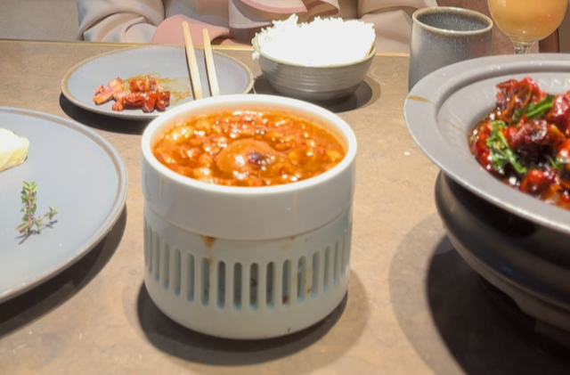这是在五道口购物中心一家叫台巷里的台湾菜馆。台湾菜里的三杯鸡是招牌菜，酱味很重的感觉。烤肉拌饭也值得一吃，下饭管饱。但是蟹黄包的味道一般，有点淡，也可能是三杯鸡的味道太重了，吃过之后就感受不到蟹黄的味道。人均 ¥170 吧。
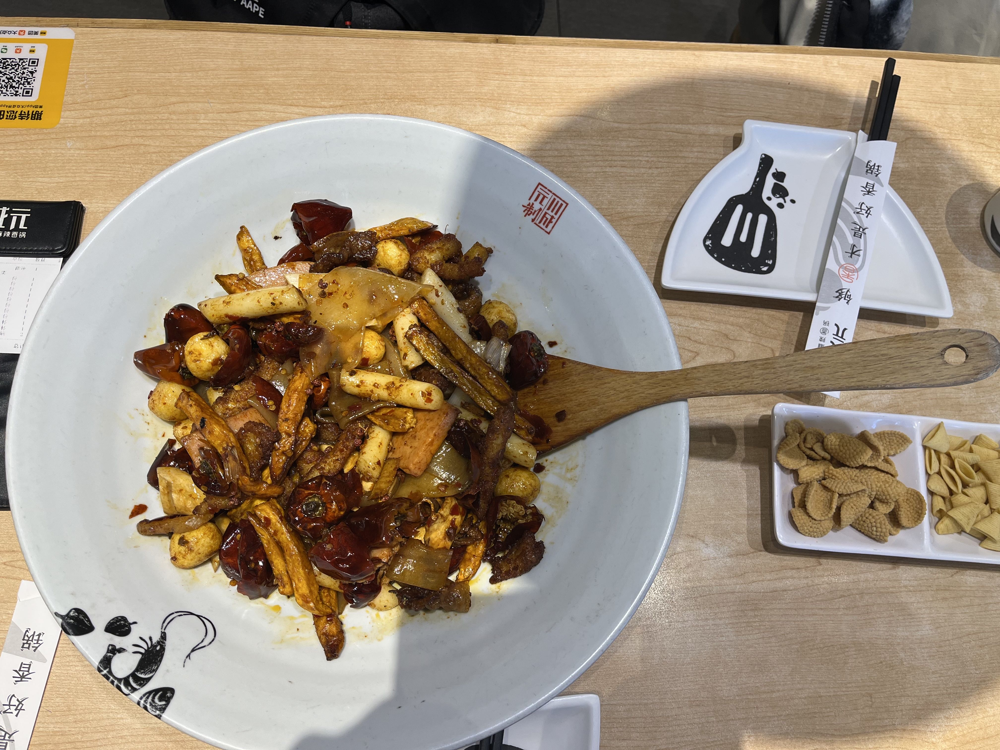这个是麻辣香锅，便宜又好吃。火锅的价格也差不多，海底捞人均 ¥150 足够吃饱了，多了吃不完。
要说环境高级还得是西餐，氛围好，餐桌间距大，桌子上放着花瓶，还可以让工作人员撒上一些花瓣。价格也要比中餐贵不少，便宜一点的西餐，大概人均要 ¥250，贵一点的，人均 ¥500，再贵一点的，没有吃过。
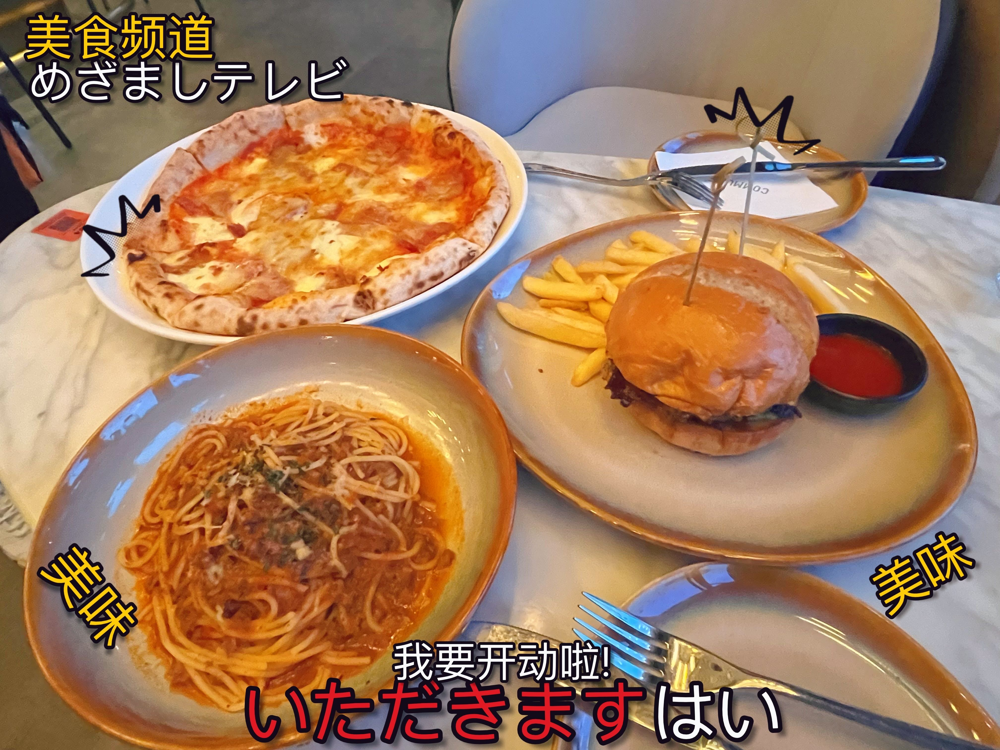在三里屯的一家西餐店，当时赶时间没吃牛排，点了披萨意面，10 分钟把所有菜全吃掉。记得这家的意面是吃过最好吃的，但是后来再去吃，意面披萨汉堡全部不一样了，材料也不一样，盘子也不一样，找不到以前的味道。对了西餐为啥要配上日语的标语 😂

这是一家小店，在望京一个小商场的 -1 层，靠窗这个位置拍出来的照片还是挺好的。也是随便吃一顿的晚餐，人均 ¥250。
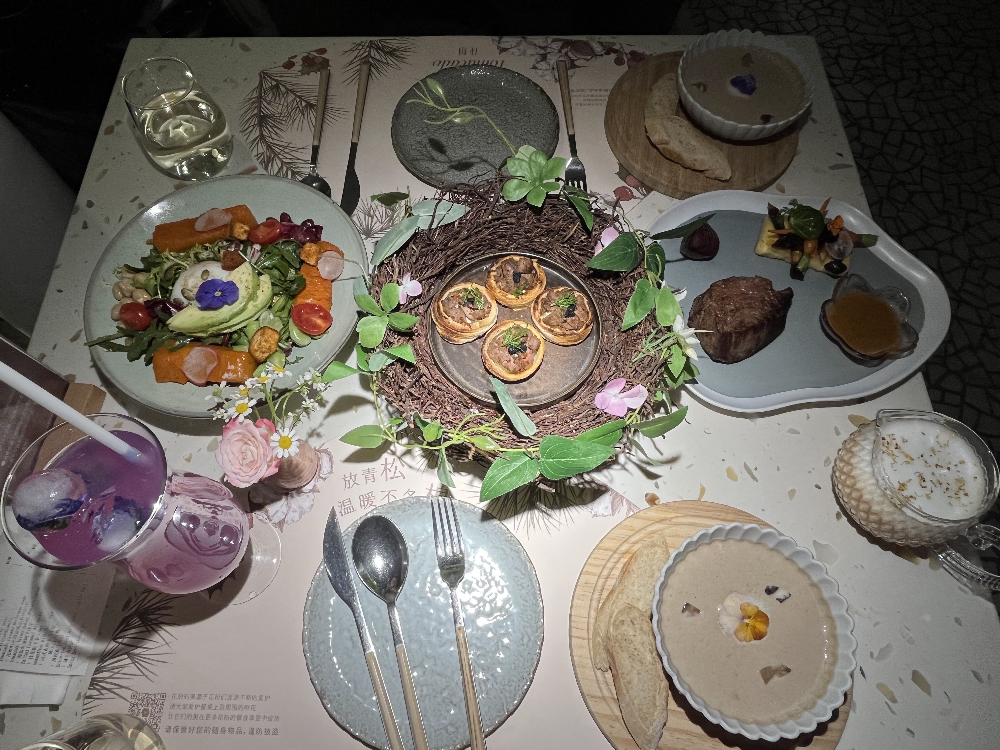 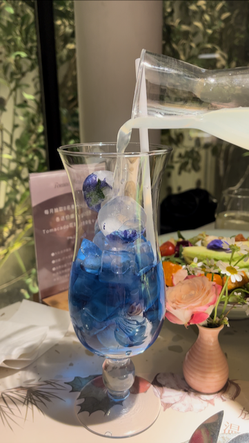这个是有名的花厨，餐厅里面环境好，餐品样式也好。第二张照片是蓝蝴蝶鸡尾酒，把酒倒进去后会有一个变色的过程，从蓝色变成粉色，挺好玩的。人均不到 ¥300 吧。
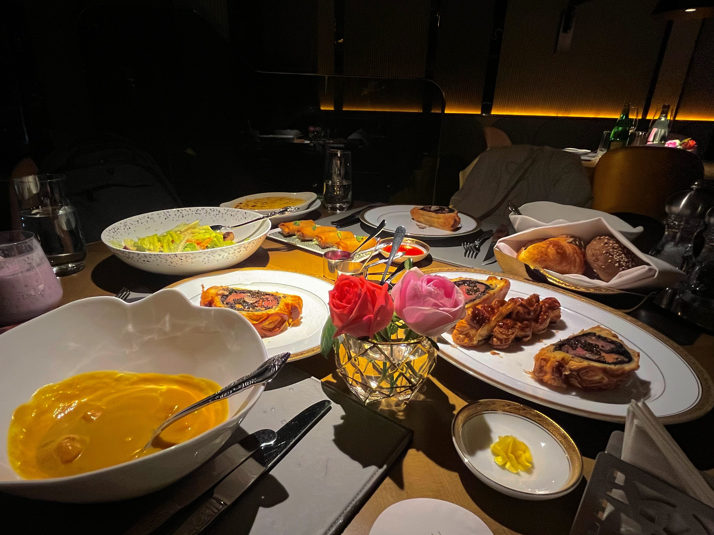这个是我吃过最贵的西餐，在牛排家，惠灵顿牛排套餐，牛排肉很软，很嫩，很好吃。人均 ¥500。
韩餐可以试一下最简单的石锅拌饭，在各种商场里面的简餐，人均 ¥50。或者商场里有的部队火锅，辛拉面最好吃了，也不贵。当然平时也可以买几桶 5 块钱的辛拉面泡面尝一尝味道。
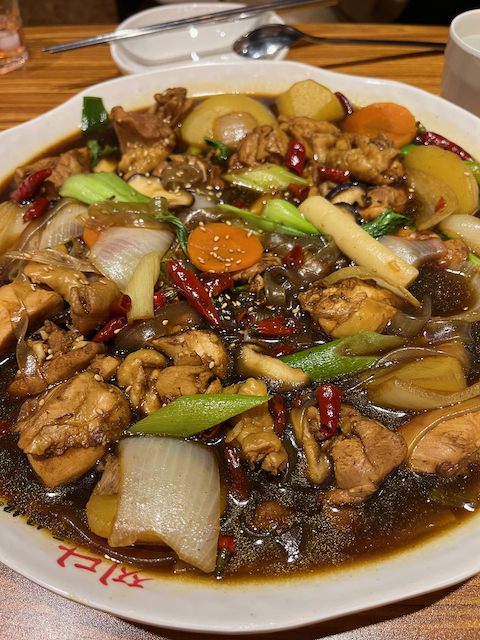这是一家在望京的店，叫元妈妈的安东鸡，在那个一条街的商圈里面，韩式风味的鸡肉，场地不大，看着比较像家常菜，但是这个鸡肉挺好吃的，带点辣，汤看着颜色重但是可以直接喝，而且我很喜欢这个汤的味道。尤其是把汤浇到米饭上，拌饭吃。人均 ¥120。
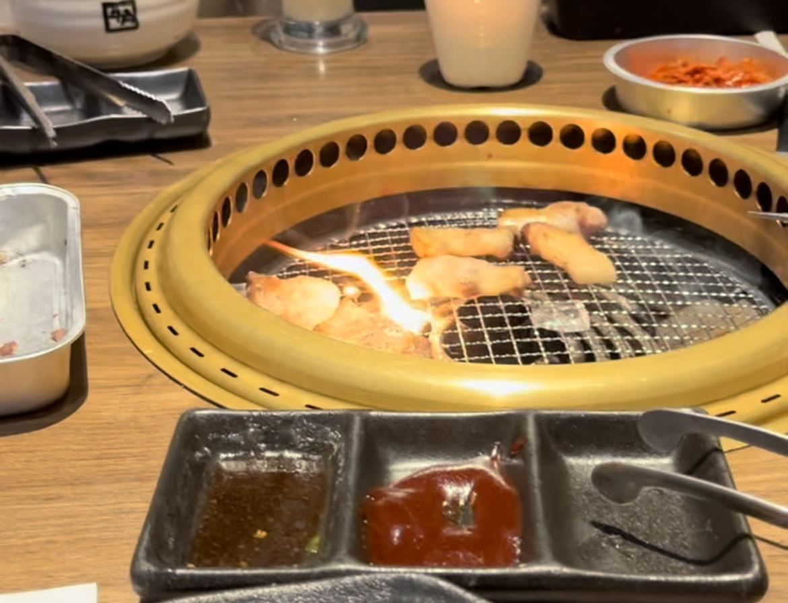更硬菜一点的是韩式烤肉，猪五花最好吃了，必须点两份，还有肥牛，再点个海带拌饭。不过要小心烤肉的时候不要着火，有一次用那种铁丝的网烤肥牛，直接烧起来了，肉全焦了。
墨西哥菜不贵而且出其不意地好吃，这个肉看着黑但是并不是焦，上面有一层酱汁。墨西哥菜都是饼里卷着菜的风格，餐桌上会有小卡片，告诉你墨西哥的菜，吃的时候手要抬起来，手捏着饼，小臂和桌面平行，头倾斜 45 度，挺讲究的吃法。当然你要真那种姿势吃可能也挺奇怪的。
日料价格和西餐差不多，刺身之类的生食比较多，我吃的少，寿喜锅是经常出现的菜品，还有各种小烤串。不过日料的店家场地似乎都不大，很挤的感觉。北京有一家店忘了叫什么，可以换上和服到门口拍和式风格的照片，不过衣服都不新，菜也很一般，贵，量少，主打拍照。
如果中午没吃饭，下午两三点就得去吃个下午茶。虽然只是甜品，当个点心吃，但是价格并不便宜。甜品的价格有高有低，由甜品店的风格决定。基本上有两种类型。快餐式的甜品店人均 ¥80，一人一个蛋糕一杯饮料，再多点个蛋糕或者冰激凌。还有一种是网红甜品店，装修华丽，专门给小姑娘拍照准备的，人均 ¥180。
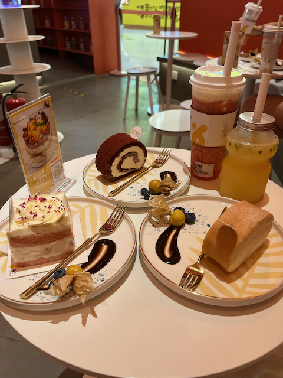这个是快餐式的甜品，在朝阳大悦城里面。甜品的味道一般不会差，饮品的种类花样也比较多，鸭屎口味的饮料我是真的接受不了。
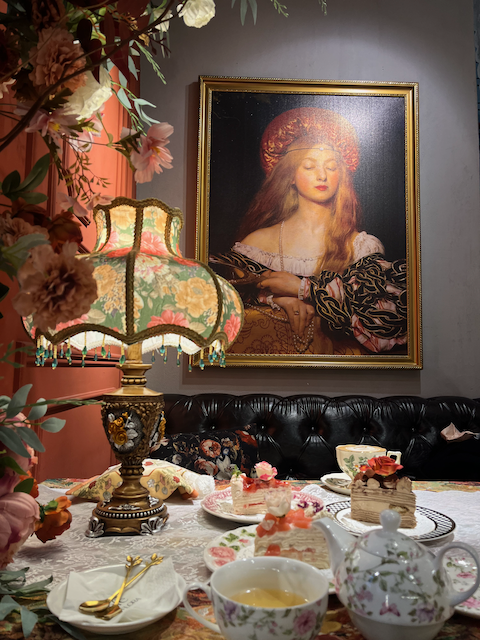这个属于看着高大上的甜品店，大众点评上好评多，比较火爆，需要预约那种，中古欧式风格，穿一身 Lolita 在这里拍照，背景氛围各种好看。
总来来说，各种菜系，人均 ¥150 - ¥200 就妥妥的了。真的是吃了很多次开心的饭。